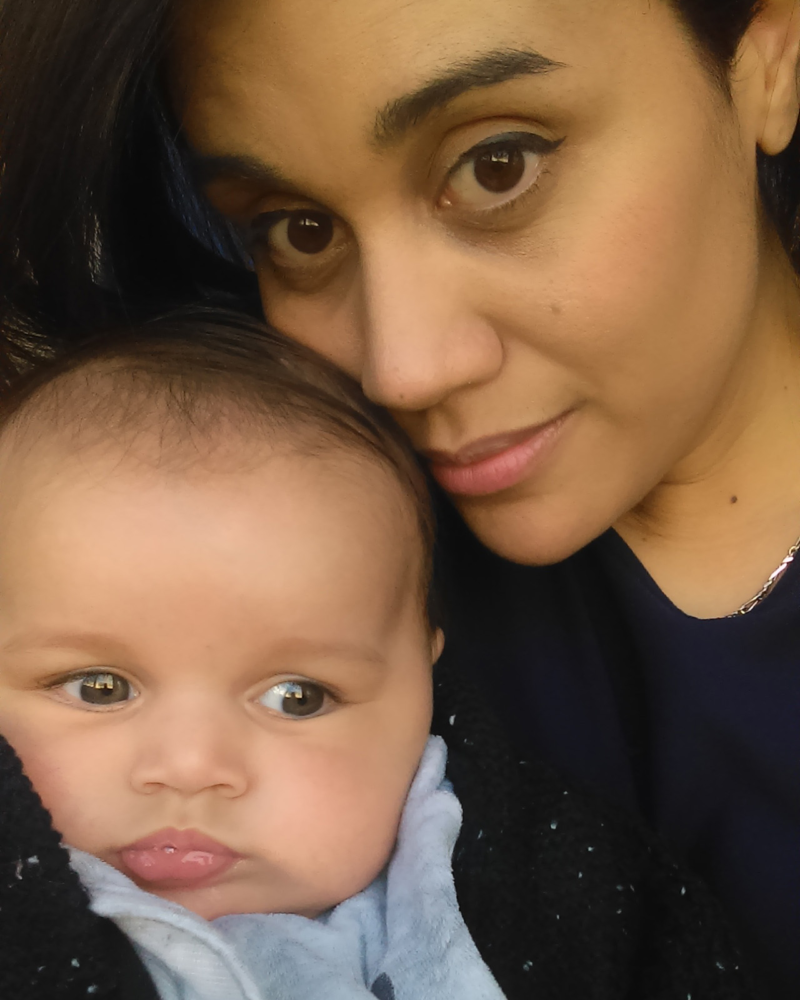

Carollane
- Accueil
- Témoignages
- Carollane

Le 02 Décembre 2017C'est au travail vers 7h45 du matin que je recevais un appel téléphonique de mon conjoint. Je savais immédiatement que cela était grave car j'avais pour habitude de laisser mon portable dans mon vestiaire. Nous avions convenu avec mon conjoint que seul les appels d'urgence devaient être effectués sur mon lieu de travail.
Il me parle en pleurs et désemparé, me disant que notre fils Kynan s'est étouffé en buvant son lait et que les pompiers sont à la maison, qu'ils le prennent en charge. Je me suis effondrée et je me précipita à la voiture pour rentrer chez nous. 40 minutes me séparait de notre domicile, 40 minutes où je ne faisais que pleurer.
Arrivée là, les pompiers étaient déjà partis en direction de l'hôpital pour enfant à Grenoble (38 minutes de chez nous), à peine le temps d'essayer de nous remettre de nos émotions et nous repartîmes pour aller retrouver Kynan.
Nous devions nous rendre en service réanimation, un service fermé où seuls les parents étaient admis. Nous nous installâmes en salle d'attente, et nous avons attendu bien 30 minutes avant qu'une interne ne vienne, sans même un bonjour, en nous annonçant que le petit était en train de passer un scanner.
Puis encore ¾ d'heure pour nous convoquer dans un bureau où un médecin de la réa, une femme, nous expliqua qu'ils avaient découvert du sang dans la région frontale de son crâne, mais aussi un œdème dans la partie arrière, et enfin une thrombose sur une veine de son cerveau.
Nous tombâmes des nues, nous étions effondrés, nous avions cru à un « simple » étouffement, nous pensions le récupérer le lendemain au plus tard.
Ce même médecin nous informa que le sang accumulé faisait pression sur sa boite crânienne, qu'il fallait l'opérer d'urgence, mais qu'ils avaient besoin de notre autorisation et c'est en pleurs et désemparés que mon conjoint et moi-même signâmes les papiers.
Elle continua, sans même une once de compassion, en nous posant des questions plus ou moins douteuses à mon goût : Avez-vous fait tomber votre fils par mégarde ? Est-il tombé de la table à langer ? A-t-il reçu un coup ? A-t-il eu un traumatisme ? Un choc violent à la tête ?
Nous l'aurions dit dès le départ s'il était arrivé quelque chose d'aussi dangereux à notre enfant !
Et là je compris tout de suite, étant moi-même aide-soignante et de ce fait côtoyant le milieu médical, que ce médecin nous soupçonnait. Elle était catégorique : notre fils avait été victime d'un traumatisme.
Nous sommes le 02 Décembre 2017, notre fils est pris en charge depuis 3H et elle était prête à en mettre sa main à couper. Et son regard se tournait « naturellement » vers mon conjoint, car il avait assisté à l'agonie de notre fils.
Puis nous attendîmes qu'ils l'opèrent, et plus d'une heure plus tard c'est le neurologue et son interne (qui opéra notre fils) qui nous ont dit que tout s'était bien passé, qu'il lui avait posé un drain au niveau du crâne pour évacuer le sang.
C'est lui qui nous expliqua que ce sang correspondait à des hématomes sous duraux, mais qu'ils ne dataient pas d'aujourd'hui, qu'il était là depuis un certain temps. Que Kynan en avaient deux et que le drain servait à évacuer le surplus de sang directement absorbé par la peau de son crâne.
Nous étions effondrés, nous vivions un cauchemar, nous étions inconsolables...
Son état était stabilisé pour l'instant, mais tout pouvait basculer.
Notre enfant avait à peine 3 mois... et ils décidèrent de le placer en coma artificiel car il était en souffrance...
Je pleure encore lorsque j'écris ces quelques lignes, ces moments resteront gravés dans ma mémoire à jamais.
Lorsque nous le vîmes pour la première fois en réanimation, il était scopé, intubé, des pouces seringues de partout, une sonde naso-gastrique, une sonde urinaire... Il était enflé, un énorme pansement autour de la tête, il était inconscient...
Depuis ce jour, et ce tous les autres jours, nous venions le voir. Nous restions l'après-midi à ses côtés, lui apportant des vêtements propres, des peluches.
A presque chaque visite, de nouvelles données nous étaient transmises sur son état, une hémorragie rétinienne avait été détectée à son œil gauche, il avait également contracté une pyélonéphrite dû à sa sonde urinaire d'après les médecins, il était sous antibio.
Une multitude d'examens d'imageries ainsi que des analyses sanguines pour doser son traitement anticoagulant ont été effectués.
Au bout d'environ deux semaines si mes souvenirs sont bons, ils décidèrent de le réveiller, mais ce jour là il ne me voyait pas, il ne voyait pas son père... personne... Son œdème avait touché la zone de son cerveau qui contrôle la vue... Je ne peux vous expliquer cette souffrance, cette injustice qui touchait notre fils...
Petit à petit, ils lui enlevèrent sa sonde naso, puis ses perfusions, sa sonde urinaire. En 1 mois il a dû être transféré dans 4 services par « manque de place »
Le 22 décembre 2017
C'est ce jour fatidique où les médecins ont ruiné notre vie, en nous convoquant pour nous avertir qu'ils allaient signaler la situation de notre fils au procureur.
Aidé par des experts de Paris et St-Etienne, ils étaient 5 ou 6 à s'être penchés sur le sujet, pour eux il n'y avait aucun doute, ils étaient tous formels :
Kynan était atteint du syndrome du bébé secoué
Je ne pu m'empêcher de sourire nerveusement, en me tournant vers mon conjoint.
Puis je regardais ce « fameux » médecin et lui demanda :
« - Vous n'avez rien trouvé, alors vous nous balancé ce diagnostic ? »
AUCUNE REPONSE n'émana de sa bouche.
Je lui demandais s'ils étaient sûr, elle me répondit que oui.
Je lui dis alors que nous, nous étions certains de n'avoir jamais rien fait à notre fils, donc qu'est-ce qu'il lui est arrivé ?! Nous voulons savoir, nous ne savons rien sur le pourquoi du comment !
Comme réponse nous eûmes : « Nous vous avons convoqué car nous avons l'obligation de vous avertir lorsque nous prenons la décision de signaler un cas de maltraitance. À partir de ce moment, notre implication s'arrête là »
Et elle tînt parole... A partir de ce jour, plus aucune recherche n'a été effectué ni même envisagé, les protocoles avaient été mis en place, le diagnostic était tombé...
Ce jour même, nous avions interdictions d'approcher notre fils sans un personnel soignant. Ce même jour, les gendarmes de notre ville avaient déposé une convocation dans notre boite au lettre, afin de nous présenter de toute urgence le lendemain pour être auditionné.
Le 23 et 24 Décembre 2017
Nous fûmes auditionnés par les gendarmes, un moment de calvaire de devoir ressasser cette journée horrible du 02 Décembre, de devoir nous justifier, d'essayer de prouver notre innocence.
Je pressentais l'ampleur de cette affaire et c'est en me renseignant sur internet que je contactais l'association Adikia, Vanessa me répondit le soir même et je pus également prendre divers conseils qui se révélèrent très bénéfiques et utiles à l'heure où je vous parle. Un soutien énorme et de taille face à ce calvaire.
Le 24 une partie de ma famille fut auditionnée à son tour.
Nous passâmes un réveillon horrible, cela devait être le premier Noël de mon fils, notre maison était décorée pour l'occasion, je me souviens encore que j'accrochais les guirlandes au mur, mon fils aîné jouait aux voitures et Kynan me regardait, installé dans son transat.
Nous somme le 20 Février 2018 et je n'ai pu me résoudre à décrocher ces guirlandes...
Le 28 Décembre 2017
Nous avions rendez-vous, cette fois-ci avec l'Aide Sociale à l'Enfance. C'est la directrice et l'éducateur qui allait s'occuper de notre fils qui nous recevaient.
Toujours en pleurs et la peur au ventre nous écoutions ce qu'ils avaient à nous dire.
A notre grand étonnement, cet entretien se passa très bien, et ils ne voyaient rien en nous qui nous qualifierait de « maltraitant » : aucun signalement de maltraitance à notre sujet, nous étions toujours présents pour notre fils, nous nous inquiétons de l'état de santé de notre fils, nous étions « coopérants ». Pour eux, un rapport positif devait être déposé.
La directrice portait beaucoup d'attention à la santé de notre fils, elle refusait qu'il soit déplacé au vu de son jeune âge et de situation médicale. Elle tenait à ce que Kynan reste à l'hôpital le temps que nous passions devant le juge des enfants, car les médecins faisaient pression pour que notre fils sorte du CHU. Ce qui impliquait à ce qu'il soit pris en charge par une famille d'accueil.
Le 10 Janvier 2018
Malgré tout les efforts de l'ASE, Kynan ne pouvait pas rester à l'hôpital, l'éducateur m'appela au télephone pour m'accompagner récupérer notre fils et l'emmener auprès d'un assistant d'accueil...
C'est au CHU, en récupérant les ordonnances que l'on nous a appris que Kynan avait fait une réaction allergique à l'amoxicilline (l'antibio pour la pyélonéphrite). Le dernier jour de son hospitalisation on nous apprend qu'il a fait une réaction grave d'il y a 3 semaines !
Je n'en pouvais plus de cet établissement, nous étions soulagés de partir, et en pleurs car ils allaient une nouvelle fois nous séparer de notre enfant.
Nous l'avons vu partir en voiture avec un inconnu... c'est notre vie qui s'arrêtait... j'étais inconsolable... ma vie partait avec lui.
L'éducateur fit et fait toujours beaucoup d'efforts pour que nous puissions voir notre fils deux fois par semaine. Très peu mais vitale pour maintenir les liens.
Le 12 Janvier 2018
Convocation devant la juge des enfants, aucun état d'âme mais notre avocat fut formidable. Malgré cela, il a été ordonné le placement de Kynan pendant 6 mois pour enquêter sur nous, parents et notre quotidien.
Au mois d'avril un premier rapport sera rendu, s'il est positif, la juge nous re-convoque pour voir s'il est possible de placer Kynan chez sa grand-mère (ma mère).
Si négatif, il reste dans la famille d'accueil 6 mois pleins, un deuxième rapport sera rendu en juillet.
Le 22 Janvier 2018
A 9h, les gendarmes viennent chez nous pour nous avertir que mon conjoint va être mis en garde à vue demain, car leur expert a certifié que Kynan aurait été secoué le matin de l'accident, très peu de temps avant son malaise, 1h avant plus précisément, alors que 6 médecins de l'hôpital n'ont même pas su déterminer le jour, ni l'heure, car les hématomes datent de bien avant le 02 décembre, alors qu'un seul médecin légiste arrive à déterminer cela ?
Le 23 Janvier 2018
J'emmène mon conjoint à la gendarmerie de notre ville, le cœur déchiré, il m'autorise à revenir l'après midi pour ajouter des éléments à l'enquête tirée du dossier médical de notre fils, par hasard je me retrouve devant la cellule de mon conjoint, je jette un coup d'œil au judas, et je le vois assis là, le regard dans le vide, mon cœur se déchire, et je ne peux retenir mes larmes, je suis juste écœurée et effondrée de ce qu'on lui fait subir.
On m'autorise tout de même à le voir, il garde la face mais moi je pleure en lui disant que je n'en peux plus. Il me dit que ça va aller, je lui dis que le gendarme m'avait dit qu'il le garderait jusqu'à jeudi. Il ne s'attendait pas à ça, et ses larmes commençaient à monter. Je le voyais mais j'étais impuissante car je compris que je devais partir, je me retournais une dernière fois pour le voir, nous étions en larmes. Et je m'en voulais, je m'en voulais toutes les fois où on se disputait pour rien, pour du linge pas rangé, ou une vaisselle pas faite.
Le 24 Janvier 2018
Confrontation avec mon conjoint lors d'une audition filmée, je vous épargne les détails mais les questions étaient tout bonnement horribles :
« - Que pensez-vous des parents qui secouent leur enfant ?
Pensez-vous que parce qu'ils les ont secoué, ces parents n'aiment pas leur enfant ?
Faisant partie du corps soignant, avez-vous toute confiance aux médecins ?
Est-ce que ça vous a traversé l'esprit que votre conjoint puisse avoir secoué votre enfant ?
Gentil et aimable quand nous ne sommes pas auditionnés, mais une autre face lorsqu'il nous questionne.
Le 25 Janvier 2018
Mon conjoint fut déféré devant le juge et il a été ordonné « une interdiction de rentrer en contact avec Kynan et moi-même. »
Il est sous contrôle judiciaire et mis en cause pour violence ayant entraîné une mutilation ou une infirmité permanente sur un mineur de 15 ans.
(Pour info : Prévue par l'article 222-9 et 222-10 alinéa 2 du Code pénal et réprimée par l'article 222-10 alinéa 1 du même code Infraction punie de 10 ans d' emprisonnement. Lorsque cette infraction est commise sur un mineur de 15 ans, par un ascendant légitime, naturel adoptif ou par toute personne ayant autorité sur le mineur la peine encourue est portée à 20 ans de réclusion criminelle).
Depuis ce jour, je n'ai plus de nouvelles de mon conjoint. Le juge veut s'assurer que je ne suis pas influencée et veut nous auditionner. Aucune date n'a été fixé à ce jour.
Le 20 Février 2018
Séparée de mon fils et de mon conjoint, je me démène pour essayer de trouver des solutions à notre calvaire.
Kynan est en bonne santé, sa mobilité est bonne, et sa vision revient de jour en jour mais nous ne savons pas si cela sera suffisant pour qu'il puisse apercevoir convenablement.
Nous ne savons toujours pas ce qui est arrivé à Kynan, sachant que ces hématomes sont présents depuis bien avant son accident du 02 Décembre. Les médecins ne font aucun lien entre sa Thrombose et la survenue de ses hématomes mais au contraire disent que c'est les hématomes qui sont responsable de sa Thrombose.
Mon fils a toujours son drain et n'est plus sous anticoagulant, le risque est qu'il soit atteint d'une pathologie dont le phénomène de coagulation est défaillant. Si je ne trouve pas rapidement une cause à ses symptômes, le danger est qu'il subisse à nouveau l'apparition d'un caillot lorsque son drain sera enlevé.
Je ne me décourage pas mais chaque jour est une souffrance, la souffrance de ne pas voir mon fils et mon conjoint, la souffrance de voir nos droits octroyés, la souffrance de voir que plus personne ne se préoccupe de la cause mais bien des conséquences... La peur que mon fils ne soit pas guéri à temps...